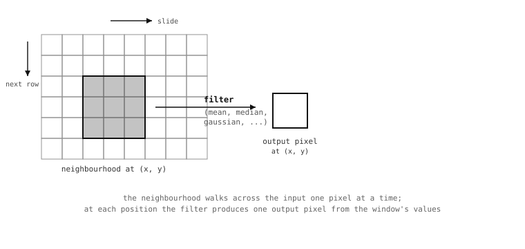

8.13. Linear and neighbourhood filters¶
The pixel-math operations earlier in the chapter
combined two images point by point. Filters do
related work in a different way: they compute
the value of every output pixel from a small
neighbourhood of input pixels surrounding the
corresponding position. The output at (x, y)
is some statistic – the average, the median, the
most common value – of the input pixels in a
small box centred on (x, y).
That little change in framing – moving from one pixel at a time to a window of pixels at a time – is what makes a whole family of useful operations work. A simple average over a small window smooths sensor noise out. The median over the same window removes single-pixel speckle without softening edges as much. A bilateral average refuses to smooth across strong contrast boundaries, preserving the edges of objects while cleaning up the textures inside them. The neighbourhood is the unit of work; the choice of statistic decides what the filter does.
8.13.1. The kernel size¶
Every neighbourhood filter takes a size
parameter that sets the radius of the window
in pixels. The window itself is square and
covers (2 * size + 1) pixels on each side –
so size=1 means a 3-by-3 neighbourhood,
size=2 means 5-by-5, size=3 means 7-by-7,
and so on.

The neighbourhood slides across the image one pixel at a time, top-left to bottom-right. Each output pixel is the result of applying the filter’s statistic to the input neighbourhood centred on it.¶
Larger sizes mean larger neighbourhoods, which
means smoother (or more aggressive) filtering.
The cost grows with the area of the window, so a
size=3 filter does about nine times the work
per pixel that a size=1 filter does. The
practical default for most cleanup work is
size=1 or size=2; reach for larger sizes only
when small neighbourhoods are not enough to suppress
the feature the application is trying to suppress.
8.13.2. The mean filter¶
mean() replaces each pixel
with the arithmetic average of its
neighbourhood. The result smooths brightness
variations over the size of the window, which
makes it the cheapest way to suppress
sensor-noise speckle: high-frequency variations
average out, low-frequency content survives.
The trade-off is that edges and other sharp
features get averaged too. A bright edge that
was one pixel wide before the filter is two or
three pixels wide after a size=1 mean
filter, with the brightness ramped down at the
shoulders. For pure noise reduction on a
texture-poor image (a clean wall, the inside of
a coloured marker) the trade is fine. For a
busy scene where edges matter, one of the
following filters is usually a better fit.
img.mean(1) # 3x3 box average -- fast, gentle smoothing
img.mean(2) # 5x5 box average -- stronger, slower
8.13.3. Median, mode, midpoint¶
The other three statistical neighbourhood filters trade the simple arithmetic average for something more robust against outliers.
median() returns the
median of the neighbourhood – the value that
ends up in the middle of the sorted list of
window pixels. A single very bright or very
dark pixel in the window does not pull the
median; it just becomes one of the discarded
extremes. The practical effect is that median
filtering removes single-pixel speckle and
salt-and-pepper noise without softening edges
the way mean does. The cost is more
computation per pixel – sorting a window is
slower than averaging it – and the result is
not strictly an average, which sometimes
matters for downstream maths.
A percentile parameter (default 0.5)
moves the chosen value off the strict median.
percentile=0.0 returns the minimum of the
neighbourhood, percentile=1.0 the maximum;
intermediate values blend toward one or the
other. That gives median the ability to
emphasise dark or bright parts of the
neighbourhood without losing the
outlier-robustness of the order statistic.
mode() returns the most
common value in the neighbourhood. Useful when
the noise model is “most pixels are right, a
few have been corrupted to varying degrees,”
where the right answer is whichever value
appears most often – which the median may
miss if the corruption spread the wrong
direction.
midpoint() returns a
weighted combination of the minimum and the
maximum of the neighbourhood – bias=0.5
gives the midpoint between them, bias=0.0
gives the minimum, bias=1.0 gives the
maximum. Less commonly used than the others
but worth knowing about for filters that need
to extract specifically dark or bright
features.
8.13.4. Bilateral, the edge-preserving version¶
bilateral() is the
neighbourhood filter most worth understanding
well. It produces the smoothing effect of
mean(), but with an extra
constraint: pixels in the neighbourhood that
are very different from the centre pixel get
excluded from the average. The result smooths
the inside of every region of similar
brightness without bleeding across the edges
that separate them, which is exactly what most
applications actually want.
Two parameters control how aggressively the filter excludes pixels:
color_sigmadecides how brightness difference affects the weighting. Smaller values mean the filter is stricter about excluding pixels that differ from the centre.space_sigmadecides how spatial distance affects the weighting. Smaller values give more weight to pixels close to the centre.
The defaults (color_sigma=0.1,
space_sigma=1.0) are reasonable starting
points; tuning them is usually a matter of
running the filter on a sample frame and
adjusting until edges are crisp and interiors
are clean.
Bilateral is more expensive than
median() and significantly
more expensive than mean(),
so it is worth reaching for only when the
edge-preserving behaviour is the thing the
application needs.
8.13.5. Adaptive thresholding¶
The mean, median, mode, midpoint, and gaussian filters all carry the same pair of keyword arguments that turn their output into a binary threshold:
threshold=Trueswitches the filter into thresholding mode.offset=Nshifts the local cutoff byNunits before the comparison.
The mechanic builds directly on the filter’s
ordinary behaviour. Without threshold=True,
the filter computes its statistic over the
neighbourhood and writes that statistic into
the output pixel. With threshold=True, the
filter computes the same statistic, then
compares the source pixel at the same
position against the statistic plus the offset,
and writes the format’s maximum value if the
source is greater, zero otherwise.
The result is a binary image whose cutoff moves with the local brightness across the frame. Bright regions get a high cutoff, dim regions get a low cutoff, and a foreground pixel that is locally brighter than its neighbours matches at both positions – which is exactly the behaviour a single global threshold could not produce on an unevenly-lit image.
img.mean(3, threshold=True, offset=5)
The offset parameter is where the
application controls how strict the test is.
A small positive offset demands that the source
pixel be measurably brighter than its
neighbours before counting as a match, which
suppresses sensor-noise false positives at the
cost of dropping faint foreground. A small
negative offset catches faint foreground at the
cost of letting some noise through. The choice
depends on what the rest of the pipeline is
going to do with the binary output.
![Three image panels in a row. The first is an input grayscale frame with a brightness gradient and foreground marks scattered across at uniform darkness. The second panel shows a global threshold applied to it: the foreground is correctly classified on the bright side, but the entire dark side reads as foreground because page and foreground both fall below the cutoff. The third panel shows an adaptive threshold applied to the same input: the foreground is correctly classified across the whole frame.](../../../../_images/adaptive-threshold.svg)
Under uneven illumination, a single global
threshold cannot describe the foreground at
every position. A neighbourhood filter run
with threshold=True produces a cutoff
that moves with the local brightness and
classifies the foreground correctly across
the whole frame.¶
The filter family runs the adaptive threshold,
so picking the right filter matters:
mean() for the cheapest
adaptive threshold, gaussian()
for a smoother weighted average,
median() when the input has
salt-and-pepper noise the filter should reject
before computing the local cutoff.
With size as the neighbourhood radius, a catalogue of statistics from arithmetic mean through edge-preserving bilateral, and the adaptive-threshold flags that turn the filters into local classifiers, the linear-neighborhood family covers the smoothing and locally-adaptive work classical MV pipelines need. The remaining filter family operates along the same neighbourhood pattern but with different statistics: the smoothing of a true Gaussian average, and the edge response of a Laplacian operator.